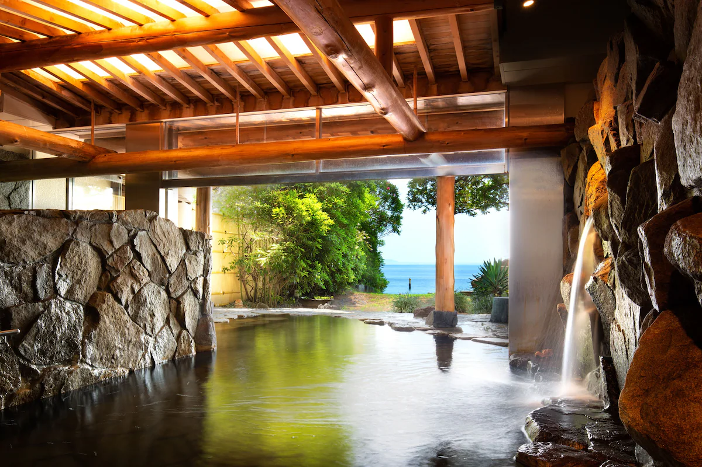
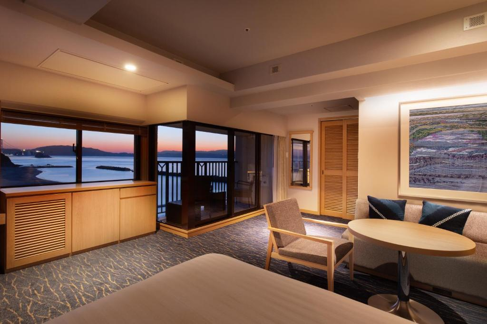
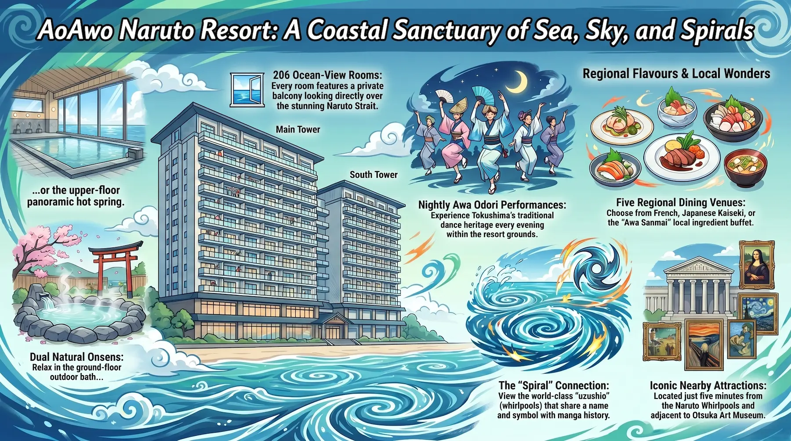
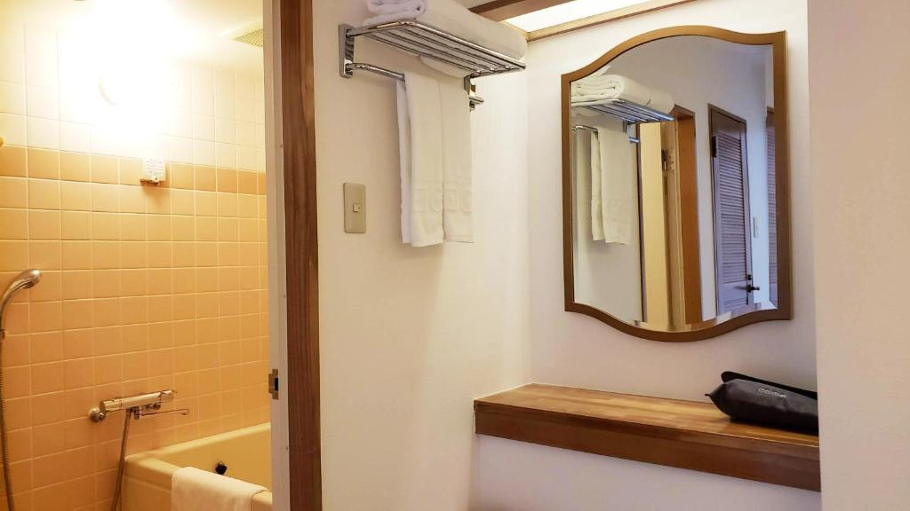
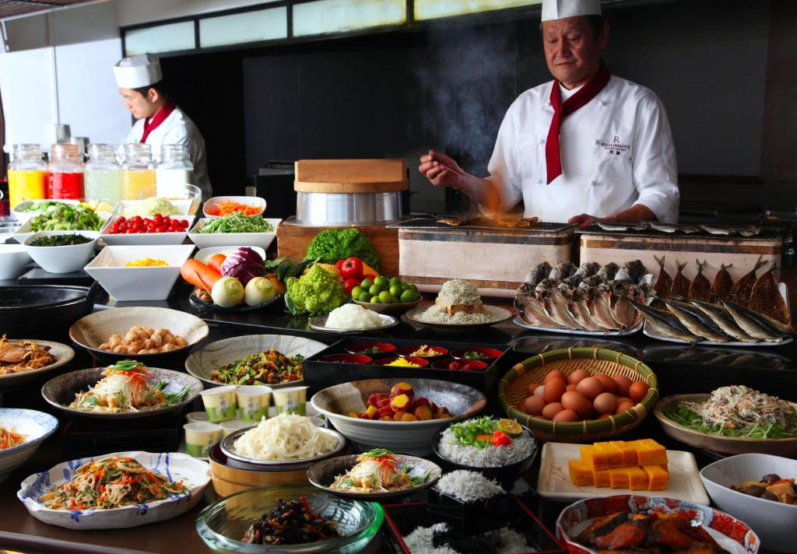
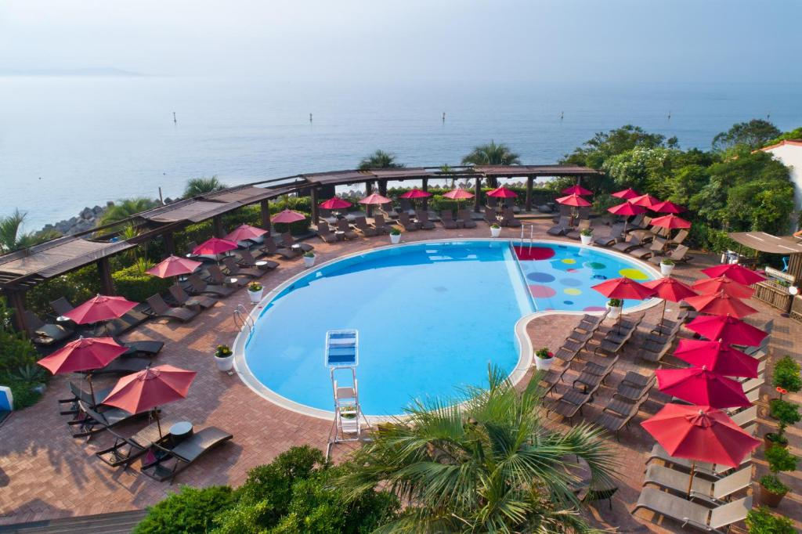
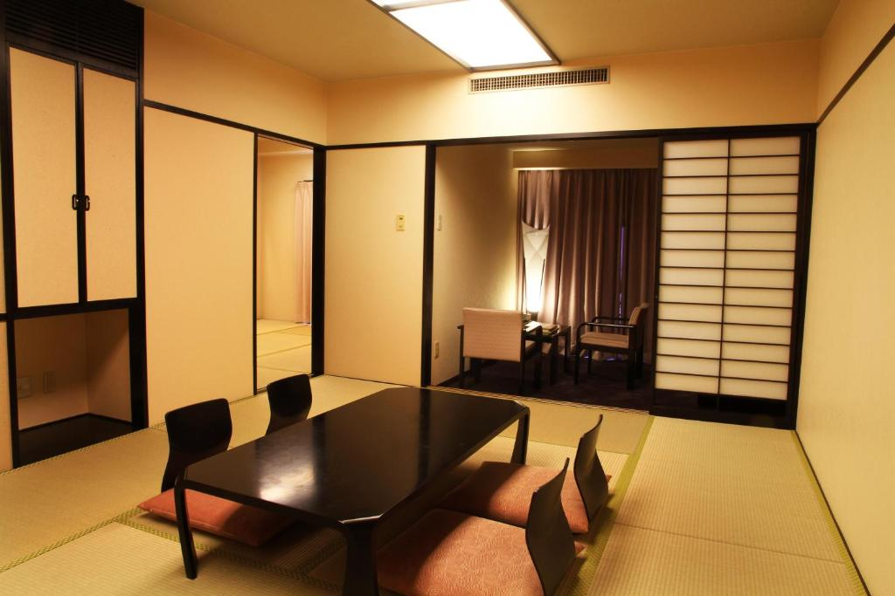
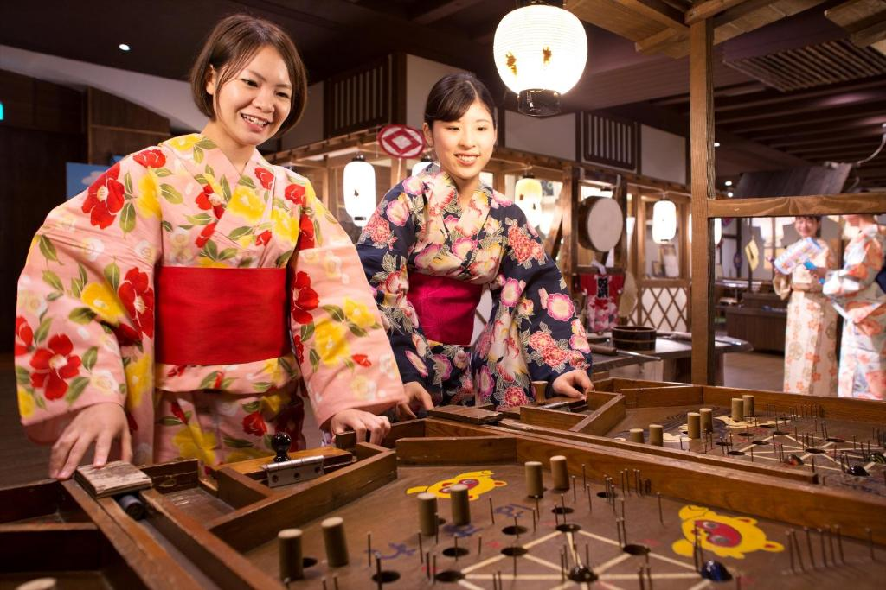

There is no hotel in Japan with a name quite like this one. AoAwo Naruto Resort — アオアヲ ナルト リゾート — sits inside the Seto Inland Sea National Park on the Tokushima coast of Shikoku, where the Naruto Strait churns with some of the fastest tidal currents on earth. The city of Naruto shares its name with one of the most widely read manga franchises in history: Masashi Kishimoto's Naruto, which ran from 1999 to 2014 and sold over 250 million copies worldwide. That coincidence of naming has made this stretch of coastline an unlikely but entirely logical destination for manga pilgrims. The whirlpools are real. The hotel is real. And for a guest who arrives knowing both — the tidal science and the fictional ninja — it is a stay that occupies a genuinely unusual position: resort luxury and anime geography, sharing the same oceanfront address.
History: From Renaissance Resort to AoAwo
AoAwo Naruto Resort opened in 1991 under the Renaissance Hotels brand — at the time, a Marriott International flag — as one of the first Western-managed full-service resort properties in Tokushima Prefecture. The building that guests check into today is the same structure: two towers facing the sea, the Main Tower housing the lobby, restaurants, onsen, and banquet facilities, and the South Tower adding room inventory on floors two through nine. In its Renaissance years the resort operated with Marriott Rewards integration and attracted a mix of domestic leisure travelers and international guests on Kansai-Shikoku itineraries.
The property transitioned to the AoAwo brand — a name derived from the Japanese words for blue (蒼, ao) and green (碧, awo), evoking the colors of sea and sky — and has operated under independent management since, maintaining the original infrastructure while progressively renovating the guest rooms and adding locally themed design elements that distinguish it from its international-brand predecessor. In 2026, the resort is celebrating its 35th anniversary, which the property has marked with a series of events across the anniversary week. The bones of the building are those of a 1990s resort built to international standard; the character layered over them is distinctly Tokushima.
The Resort as a Seaside Experience: What AoAwo Actually Offers
AoAwo Naruto Resort is a Southern European-style oceanfront resort — the architectural vocabulary is Mediterranean rather than Japanese ryokan — with 206 guest rooms distributed across thirteen room types in the Main and South Towers. Every room faces the ocean. That is not a marketing commitment with a quiet-side asterisk: the hotel is built in a wide horizontal configuration specifically so that all guests have a sea view, and the result is that from your room you are looking directly at the Naruto Strait, with the Great Naruto Bridge visible from the upper floors and corner rooms.

The resort sits within a designated national park, which means the surrounding landscape is protected — there are no buildings obstructing the waterline, no commercial sprawl immediately adjacent. The beach is accessible from the hotel grounds, and in summer the seasonal outdoor pool opens for guests. Marine activities — sea kayaking, cruising, fishing for Naruto sea bream — are available through the hotel's activity program. A rental car station has been added to the property in recent years, which substantially expands access to Shikoku's interior for guests who want to range beyond the immediate Naruto area. The atmosphere is that of a self-contained resort, which it functionally is: there are no restaurants within walking distance, and the hotel's dining program is built to be comprehensive rather than supplementary.
Guests arriving with visible tattoos should be aware that the public onsen facilities follow standard Japanese policy restricting visible tattoo access to communal bathing areas. The hotel has published guidance on this; private in-room bathing is available across all room categories as an alternative.
The Naruto Connection: Whirlpools, the Manga Name, and What the City Actually Offers
The relationship between the city of Naruto and Masashi Kishimoto's manga is one of nomenclature rather than biography. Kishimoto was born in Okayama Prefecture, and his stated inspirations for the Hidden Leaf Village of Konoha draw on his own rural Okayama hometown of Nagi — not Tokushima. The name Naruto predates the manga by centuries: it derives from naruто (鳴門), meaning "roaring gate," a reference to the sound the tidal currents make as they surge through the narrow strait. The whirlpools — uzushio — are one of the three fastest tidal phenomena in the world, reaching up to twenty meters in diameter during peak spring and autumn tides.

The coincidence of names has nonetheless produced a genuine pilgrimage geography for Naruto fans, and the city leans into it. For readers of Kishimoto's series, the visual resonance of arriving in a coastal city called Naruto — standing on the Onaruto Bridge, watching the uzushio spiral below, staying in a hotel with the name on its signage — is the kind of experience that anime pilgrimage is built on: places where fiction and geography converge, even obliquely. The symbolism of the whirlpools — spiral energy, the uzumaki pattern central to Naruto Uzumaki's identity and clan name — is exact and impossible to ignore. The word uzumaki (渦巻き) means whirlpool or spiral. The city produces them in the tens of thousands per year, visible from the hotel's upper floors.
AoAwo Naruto Resort is the best-positioned hotel in the city for this dual purpose. The Naruto Whirlpools are approximately five minutes by car. The Onaruto Bridge's Uzu-no-Michi walkway — with its glass-floor panels suspended 45 meters above the whirlpools — is within the same distance. Ryozenji Temple, the first of the 88 sacred temples of the Shikoku Pilgrimage, is a short drive inland. The Otsuka Art Museum, which houses life-size ceramic reproductions of over a thousand Western masterworks including the complete Sistine Chapel interior, is immediately adjacent to the hotel grounds — guests in upper-floor rooms can see it from their balconies.
Location: Inside a National Park, at the Edge of the Strait
The resort's address is Oge-16-45, Narutocho Tosadomariura, Naruto, Tokushima — a coastal strip within the Setonaikai National Park, on the Tokushima side of the Naruto Strait. The Great Naruto Bridge is visible from the property; Awaji Island lies across the water. The position within a national park means the surrounding landscape is largely undeveloped: forested hillsides, protected coastline, and the strait itself form the immediate environment rather than urban infrastructure. The hotel is not walkable to convenience stores, restaurants, or transit stations — it is a resort, and it functions as one. Guests without a rental car or the hotel's shuttle are effectively guests of the resort's own facilities for the duration of their stay.
This remoteness is partly the appeal. Naruto Prefecture is Shikoku's least-visited by international visitors, which means the crowds that define Tokyo and Kyoto itineraries are largely absent. The cultural density of the immediate area — the whirlpools, the Art Museum, the Shikoku Pilgrimage, the traditional Awa Odori dance performances held at the resort itself — is genuine and accessible without queues. Multiple reviews note that the resort is a reasonable day-trip hub for southern Awaji Island and the broader Tokushima region by car, with the drive across the Onaruto Bridge to Awaji taking under ten minutes.
The Rooms: 206 Ocean-View Rooms Across Thirteen Types
AoAwo Naruto Resort offers 206 guest rooms in thirteen configurations, ranging from the entry-level Superior Twin in the South Tower to the Japanese Suite and the flagship Riviera Suite in the Main Tower. All rooms have balconies and direct sea views — this is the defining architectural characteristic of the property. Room sizes are generous by Japanese standards, with corner superior upgrades running to approximately 44 square meters. Standard Superior Twin rooms are smaller but still include the balcony and ocean-facing orientation.
The room categories that carry the most distinctive character are the art-themed rooms introduced through recent renovations. The Bridge View Twin Awa Ai room incorporates Awa Indigo dyeing — the traditional Tokushima textile craft dating from the Edo period — into its interior design, supervised by one of Japan's leading textile artists. The Deluxe Twin Premium room features ceramic art plates by eight potters working in Otani-yaki, the regional ceramic tradition of Naruto. The Van Gogh Sunflower Room is a collaboration with the Otsuka Art Museum — a "hotel room you can stay in as an art gallery" — which positions it as the most unusual single room in the building for guests interested in the museum's collection. These themed rooms carry a premium over the standard inventory and require advance booking.
All rooms include pillow menus, premium bedding, air conditioning, free Wi-Fi, tea and coffee makers, streaming services, and soaking tubs. Yukatas are provided for onsen use. Reviews consistently describe room cleanliness as excellent and room size as one of the property's genuine advantages over more compact urban Japanese hotels. The Main Tower is recommended over the South Tower for proximity to the onsen, restaurants, and lobby — the connecting corridor between buildings is approximately 160 meters on the first floor, which becomes relevant during multiple daily trips between facilities.
The Onsen: Two Natural Hot Springs, One of Them Facing the Sea
AoAwo Naruto Resort operates two natural onsen facilities: one on the ground floor, partially open-air and facing the ocean; and one on the upper floors of the Main Tower, enclosed but with panoramic sea views across the Naruto Strait. Both are gender-separated, both are available to all guests, and both are included in the room rate as a standard amenity. This is the feature that receives the highest and most consistent praise across review platforms — the combination of natural mineral water, ocean views, and the specific quietude of a national park setting is difficult to replicate in any urban Japanese accommodation context.
The ground-floor onsen is the one most frequently cited as the better of the two for atmosphere: partially outdoor, with the sea visible from the bathing area, accessible in the morning when the sunrise over the Naruto Strait is directly in view. The upper-floor facility is prized for its elevated panoramic perspective, which on clear days extends to Awaji Island and the bridge. Guest reviews recommend the ground-floor option for morning use, the upper-floor for evening, and the combination of both for guests staying more than one night. The Awa Odori dance performances held on the resort grounds in the evenings — a living tradition of Tokushima going back to the Edo period — create a loop that several reviews describe as definitional to the AoAwo experience: watch the dance, take the onsen, return to the balcony, watch the moonrise over the strait.
Restaurants and Dining: Five Options, All Regional
AoAwo Naruto Resort operates five distinct dining venues, which is the functional answer to the property's self-contained character: there is nowhere else to eat within reasonable walking distance, and the hotel's program is designed to give guests sufficient variety across a multi-night stay without needing to leave the grounds. The flagship venues are the French cuisine restaurant and the Japanese kaiseki restaurant — both considered the formal dining options and both carrying higher price points, with reservations strongly recommended, particularly on weekends when domestic tour groups can fill restaurant seatings quickly.
The most popular everyday option among reviewers is the regional cuisine buffet — Awa Sanmai — which focuses on local Tokushima ingredients: Naruto sea bream (鳴門鯛), Naruto wakame seaweed, Naruto sweet potato (鳴門金時), and seasonal Awa products. Breakfast is available as both a Japanese buffet (praised consistently for its fresh seafood) and a Western option on the ground floor — both are included in most plan types and both are described as generous in scope. The terrace café Auge operates with sea views for casual daytime meals and desserts; multiple reviewers specifically call out the dessert offerings as worth visiting even outside of main meal times. The charcoal grill restaurant rounds out the lineup with a more casual evening option.
The practical advice from reviews is consistent: book restaurant tables in advance, particularly the French and Japanese options; plan for 8:00 PM or later if you are arriving without reservations on a weekend; and allow for the buffet as a reliable fallback that does not require advance planning and delivers locally-sourced food of genuine quality. The Terrace Café is walk-in during daytime hours.
Cleanliness
Cleanliness at AoAwo Naruto Resort receives strong marks across booking platforms and review sites, with specific praise for the room maintenance and the onsen facilities. The onsen areas are described as meticulously maintained — several reviews use the word "spotless" specifically for the bathroom and bathing areas. Rooms are characterized as well-kept with high standards of preparation between guests. The public areas — lobby, restaurants, corridor connections between towers — are consistently noted as clean and well-maintained. The one pattern worth noting in the review record involves the building's age: opened in 1991, the property shows signs of vintage in some areas despite ongoing renovation, and a minority of reviews mention dated carpeting or fittings in the South Tower's lower floors. This is context rather than a cleanliness issue — the hotel is clean; it is simply an older building undergoing phased renovation rather than a recently constructed property.

Value
AoAwo Naruto Resort is priced in the mid-to-upper tier of Japanese resort accommodation — typically ¥15,000–¥35,000 per person per night depending on room type, season, and whether meals are included — which positions it well above budget accommodation but below the top tier of Japanese luxury ryokan. Within that range, the value calculation is favorable: every room has a genuine ocean view and a balcony; two natural onsens are included; the resort location inside a national park with immediate access to the Naruto Whirlpools, the Otsuka Art Museum, and the Shikoku Pilgrimage's first temple is genuinely rare; and the dining program is comprehensive enough to support a multi-night stay without supplementation.
The honest constraint is the remoteness. Guests without a rental car are hotel-dependent for meals, activities, and transit. The shuttle service covers Tokushima Airport, JR Naruto Station, and the Kosoku Naruto bus stop, but it requires 72-hour advance reservation. For guests who come specifically for the resort experience — onsen, ocean views, regional cuisine, and day trips to the whirlpools and museum — the value is clear. For guests who want to use the property as a base for wide-ranging Shikoku exploration, a rental car is not optional; it is the necessary tool that makes the location work.
Practical Information
- Check-in: 15:00 (early check-in procedure available from 12:00) Check-out: 11:00
- Price Range: ¥15,000–¥35,000 / person per night (meal plans vary; seasonal pricing)
- Rooms: 206 rooms, 13 types — all ocean-view with balcony; Main Tower & South Tower
- Onsen: 2 natural hot spring facilities — ground floor (partial outdoor, sea view) and upper floor (panoramic views); gender-separated
- Tattoo policy: Visible tattoos restricted in communal onsen — in-room soaking tubs available in all rooms
- Dining: 5 venues — French, Japanese kaiseki, regional buffet (Awa Sanmai), charcoal grill, terrace café; restaurant reservations strongly recommended
- Activities: Marine activities (kayaking, cruising, fishing), Awa Indigo dyeing experience, rental car station on-site, tennis courts, seasonal outdoor pool
- Nearest access: JR Naruto Station (hotel shuttle ~15 min, reserve 72 hrs ahead); Tokushima Airport (shuttle ~25 min); Kosoku Naruto bus stop (shuttle ~10 min)
- Parking: Free on-site
- Wi-Fi: Free in all rooms and throughout the property
- Children: Welcome; child-friendly buffet available; cribs and extra beds on request
- Pets: Not permitted
Getting There
From Tokushima Airport
- Hotel shuttle: ~25 minutes (free)
- Reserve at least 72 hours in advance
- JAL flights from Haneda ~75 min
- Fastest option from Tokyo
From JR Naruto Station
- Hotel shuttle: ~15 minutes (free)
- Reserve at least 72 hours in advance
- Local bus (Naruto Park bound): alight Oge stop, 1 min walk
- Taxi available from station
From Osaka / Kansai
- Highway bus to Kosoku Naruto → hotel shuttle 10 min
- By car via Awaji Island: ~2 hrs from Osaka
- Train: Shin-Osaka → Okayama → Takamatsu → Ikenotani → Naruto
- Car strongly recommended for flexibility
By Car
- Naruto Kita IC (Honshu-Shikoku Expressway): 1 min left turn
- Free on-site parking
- From Tokushima Station: ~40 min
- Rental car station available at hotel
Tips for Getting the Most Out of Your Stay
Book restaurant tables at the same time you book your room — not as an afterthought on arrival. The French cuisine and Japanese kaiseki restaurants fill quickly on weekends, and the buffet Awa Sanmai, while walk-in friendly, can also fill on holiday weekends with domestic tour groups. The hotel's online reservation system allows dining pre-booking for most venues; use it.
Arrange the hotel shuttle in advance of arrival. The 72-hour window is firm; arriving at Tokushima Airport or JR Naruto Station without a prior shuttle booking means either waiting for the next service or arranging a taxi. If you are renting a car — which is the best way to use this property as a base — book through the hotel's on-site Sky Rent-a-Car station for the simplest logistics. Driving across the Onaruto Bridge to Awaji Island for a morning and returning for an afternoon onsen session is one of the most naturally structured day-trip loops available from this location.
For the whirlpool viewing: tidal patterns mean the whirlpools are largest during high-amplitude tides in spring (March to May) and autumn (September to November). Check tidal schedules before your visit — the Naruto Tourism site publishes viewing timetables. The Uzu-no-Michi walkway under the Onaruto Bridge provides the best elevated perspective; the Aqua Eddy boat tour provides the best close-range view. Both are within five minutes of the hotel by car. Time your visit to a high-tide window and you will see the full phenomenon; arrive at slack tide and the strait will be quiet.
The Awa Odori dance performance held at the resort in the evenings is genuinely worth attending rather than skipping as a tourist obligation. Multiple reviews from guests who initially treated it as background entertainment describe it as the most memorable element of their stay. The evening sequence of dance, upper-floor onsen with night views of the lit Onaruto Bridge, and balcony moonrise over the strait is the specific loop that defines what this resort does that no other hotel in Shikoku replicates.
Beyond the Name: An Honest Assessment
AoAwo Naruto Resort is not a themed hotel. It does not trade on the Naruto manga franchise — there are no character illustrations in the corridors, no ninja-themed amenities, no official IP collaboration that would situate it alongside the character-themed properties HotelManga covers elsewhere. The name is geography, not licensing. What the resort offers is something more difficult and more durable than theming: it is the closest full-service resort hotel to a piece of Japanese landscape that has genuine cultural resonance — a city called Naruto, famous for whirlpools, on the coast of Shikoku, where one of the world's great pilgrimage routes begins.
For the Naruto reader, that is sufficient. The spiral of the uzushio visible from the balcony at morning tide, the name on the building's sign, the knowledge that this city's roaring strait gave a character his name and his clan's symbol — these are the materials of meaningful anime pilgrimage, even when the connection is indirect. For the traveler who is not a manga reader, AoAwo Naruto Resort is simply an excellent oceanfront resort inside a national park, with two hot springs, good food, and a location adjacent to one of Japan's most spectacular natural phenomena. Both readings are valid. The hotel serves them both, without requiring either.
Hotel Directory
AoAwo Naruto Resort (アオアヲ ナルト リゾート)
Photo Gallery


Photo 2
Photo 3
Photo 4'">
Photo 5'">
Photo 6'">Stay Where the Whirlpools Are
Ocean-view rooms fill fast in spring and autumn — book ahead.